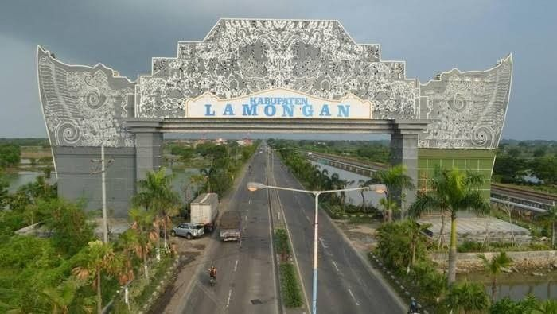
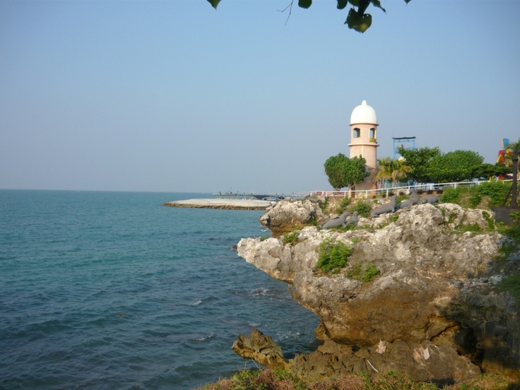
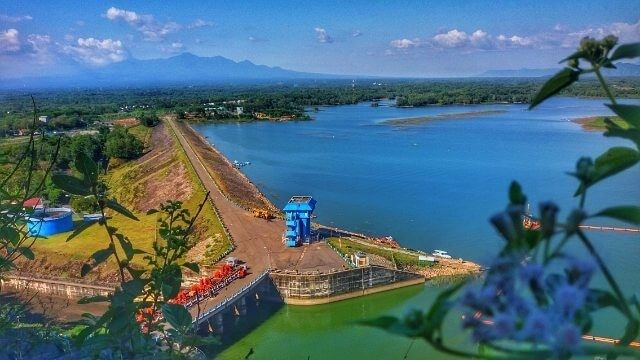

Sejarah

Sejarah Kabupaten Lamongan berakar kuat sejak masa Kerajaan Majapahit dan Airlangga,
namun secara resmi momentum jadinya diperingati setiap tanggal 26 Mei,
merujuk pada hari wisuda Rangga Hadi sebagai Adipati Lamongan pertama dengan gelar
Tumenggung Surajaya oleh Sultan Hadiwijaya dari Pajang pada tahun 1569.
Nama "Lamongan" sendiri konon berasal dari nama sebutan Rangga Hadi semasa muda,
yaitu Mbah Lamong, yang dikenal sebagai sosok pemuda yang pandai, baik hati,
dan sangat dicintai rakyatnya karena berhasil memajukan wilayah tersebut. Seiring waktu,
wilayah yang berada di pesisir utara Jawa Timur ini bertransformasi
dari pusat penyebaran Islam—yang sangat dipengaruhi oleh perjuangan Sunan Drajat dan
Sunan Sendang Duwur—menjadi daerah pertanian, perikanan, dan pusat kuliner yang berkembang pesat hingga saat ini.
Geografis

Secara geografis, Kabupaten Lamongan terletak di pesisir utara Provinsi Jawa Timur,
tepatnya pada koordinat antara 6°51'54" hingga 7°23'6"
Lintang Selatan dan 112°4'41" hingga 112°33'12" Bujur Timur.
Kabupaten yang memiliki luas wilayah sekitar 1.812,80 km² ini berbatasan langsung dengan
Laut Jawa di sebelah utara, Kabupaten Gresik di sebelah timur, Kabupaten Mojokerto dan Jombang di sebelah selatan,
serta Kabupaten Tuban dan Bojonegoro di sebelah barat.
Wisata

Kabupaten Lamongan menawarkan perpaduan destinasi wisata yang sangat lengkap,
mulai dari wahana modern di tepi pantai, keindahan alam yang asri, hingga situs sejarah dan religi yang sakral.
WBL

Terletak di Kecamatan Paciran, tempat ini merupakan ikon wisata modern paling terkenal di Lamongan.
WBL memadukan konsep taman bermain (theme park) seru yang dibangun langsung di tepi pantai utara Jawa. Tepat di seberangnya,
terdapat Maharani Zoo dan Goa yang menyajikan keindahan batuan stalaktit-stalagmit alami sekaligus kebun binatang edukatif untuk keluarga.
Waduk Gondang

Bagi Anda yang ingin menikmati suasana tenang di wilayah selatan Lamongan, waduk yang terletak di Kecamatan Sugio ini adalah pilihan yang tepat.
Selain berfungsi sebagai irigasi, waduk luas yang dikelilingi pepohonan rindang ini menawarkan wisata keliling naik perahu, area berkemah,
hingga lokasi piknik yang santai bersama keluarga.